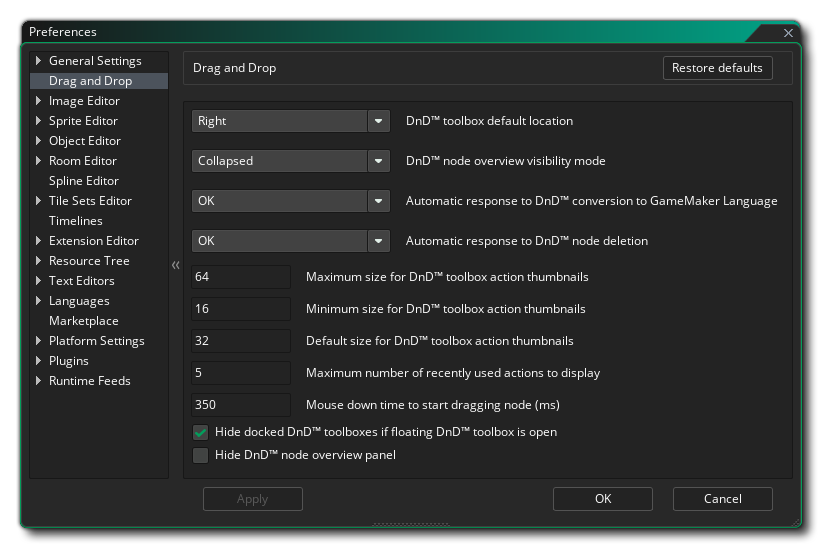

Mit den Drag & Drop- Einstellungen legen Sie fest, wie der Drag & Drop-Skript-Editor aussieht und sich anfühlt. Die verschiedenen verfügbaren Optionen sind unten zusammen mit einer Beschreibung dessen, was jeder tut.
- DnD™ Toolbox-Standardspeicherort: Standardmäßig wird die DnD™ Toolbox (wo alle verschiedenen Aktionsbibliotheken gespeichert sind) rechts vom Editor platziert, aber Sie können diese Option verwenden, um sie standardmäßig auf der linken Seite zu haben.
- DnD™ Knoten Überblick Sichtbarkeitsmodus: Ein Knoten "Übersicht" ist der kurze Beschreibungstext, der neben bestimmten Aktionen im Aktionsarbeitsbereich angezeigt wird, z. B. diese Aktion " Instanz zerstören":
 Sie können diese immer aktivieren, sie nur aktivieren, wenn die Aktion minimiert ist (die Standardeinstellung), oder sie vollständig deaktivieren.
Sie können diese immer aktivieren, sie nur aktivieren, wenn die Aktion minimiert ist (die Standardeinstellung), oder sie vollständig deaktivieren. - Automatische Antwort auf DnD™ -Konvertierung in GameMaker Sprache: Wenn Sie ein Drag-and-Drop-Ereignis oder -Skript in GML-Code konvertieren, erhalten Sie standardmäßig eine Nachricht, in der Sie darüber informiert werden, was Sie gerade tun und ob Sie fortfahren möchten. Wenn Sie diese Option auf "OK" setzen, wird die Änderung einfach übernommen, ohne dass die Nachricht angezeigt wird.
- Automatische Antwort auf Löschung des DnD™ -Knotens: Wenn Sie einen Drag & Drop-Ereignisknoten löschen, erhalten Sie standardmäßig eine Meldung, in der Sie darüber informiert werden, was Sie gerade tun werden, und Sie werden gefragt, ob Sie fortfahren möchten. Wenn Sie diese Option auf "OK" setzen, wird das Löschen einfach ohne die Meldung angezeigt.
- Maximale Größe für DnD™ -Toolbox-Aktionsminiaturen: Am unteren Rand der Aktionstoolbox befindet sich ein Schieberegler zum Ändern der Größe der Drag & Drop-Symbole. Diese Einstellung wird verwendet, um die maximal zulässige Größe zu definieren (standardmäßig 64px).
- Mindestgröße für DnD™ -Toolbox-Aktionsminiaturen: Am unteren Rand der Aktionstoolbox befindet sich ein Schieberegler zum Ändern der Größe der Drag & Drop-Symbole. Diese Einstellung wird verwendet, um die minimal zulässige Größe zu definieren (Standard 16px).
- Standardgröße für DnD™ -Toolbox-Aktionsminiaturen: Diese Einstellung wird verwendet, um die Standardgröße für alle Aktionssymbole in der Toolbox zu definieren (Standard 32px).
- Maximale Anzahl zuletzt verwendeter Aktionen, die angezeigt werden sollen: In der Aktions-Toolbox befindet sich oben eine Bibliothek, die die Aktionen enthält, die Sie zuletzt verwendet haben. Sie können diese Option verwenden, um die maximale Anzahl der letzten Aktionen zu ändern, die angezeigt werden (Standard 5).
- Zeit zum Herunterfahren der Maus herunterziehen, um Knoten (ms) zu ziehen: Wenn Sie auf einen Knoten klicken und ihn ziehen, positionieren Sie den Knoten innerhalb des Aktionscodes neu. Wenn Sie jedoch die Maus für einen Moment gedrückt halten und dann verschieben, verschieben Sie die Knotenposition innerhalb des Arbeitsbereichs, jedoch nicht in der Reihenfolge des Codes. Diese Einstellung legt die Anzahl der Millisekunden fest, die bei gedrückter Maustaste warten müssen, bevor der Knoten verschoben (nicht neu positioniert) werden kann. Der Standardwert ist 350.
- Hide DnD™ Node-Übersichtsfenster: Hier können Sie das Übersichtsfenster des Action-Code-Editors ausblenden. Standardmäßig ist dies deaktiviert und wenn Sie es aktivieren, wird die Liste der Aktionsketten aus dem Editor entfernt.